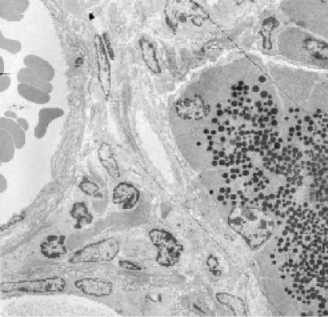

细胞器之间的分工合作（下）：协调配合与生物膜系统
本期导读
细胞器之间的分工合作（下） · 生物膜系统

视频原话 · 导读3 句
- 同学们好！这节课梳理人教版必修一第三章第二节的下半部分——细胞器之间的协调配合和细胞的生物膜系统。10.4s
- 高考常考分泌蛋白的合成和运输途径，以及放射性出现的顺序和膜面积的变化。7.8s
- 我们按六个考点梳理，每个考点都讲清楚怎么考、怎么做。5.5s
分泌蛋白01#
在细胞内合成后，分泌到细胞外起作用的蛋白质
是分泌蛋白
消化酶、抗体
一部分激素，如胰岛素
不是分泌蛋白
血红蛋白、呼吸酶：在细胞内起作用
性激素：是固醇，不是蛋白质
易错
判断是否为分泌蛋白：看它是不是在细胞外起作用，再看它是不是蛋白质
视频原话3 句
- 考点一，分泌蛋白。在细胞内合成后，分泌到细胞外起作用的蛋白质，叫作分泌蛋白。8.8s
- 常见的有消化酶、抗体和一部分激素，比如胰岛素。5.3s
- 易错：血红蛋白、呼吸酶在细胞内起作用，不是分泌蛋白；性激素是固醇，也不是。8.6s
同位素标记法02#
- 豚鼠胰腺腺泡细胞
- →注射 3H 标记的亮氨酸
- →追踪放射性出现的位置
- →确定运输途径
亮氨酸是合成蛋白质的原料，放射性在哪里出现，蛋白质就到了哪里
易错
标记亮氨酸 → 追踪蛋白质；标记胸腺嘧啶 → DNA，标记尿嘧啶 → RNA
视频原话3 句
- 考点二，研究方法——同位素标记法。科学家向豚鼠的胰腺腺泡细胞中注射3H标记的亮氨酸。9.3s
- 然后追踪放射性依次出现的位置，就知道了分泌蛋白合成和运输的途径。7.2s
- 易错：标记的是亮氨酸——蛋白质的原料；如果标记胸腺嘧啶或尿嘧啶，追踪的就是DNA或RNA的合成了。10.7s
合成和运输途径03#
解题方法
核糖体 → 内质网 → 高尔基体 → 细胞膜，线粒体全程供能
视频原话5 句
- 考点三，分泌蛋白的合成和运输。先在游离的核糖体上合成一段肽链，再与核糖体一起转移到粗面内质网上继续合成。11.8s
- 肽链在内质网腔内加工、折叠，形成有一定空间结构的蛋白质，再由囊泡包裹着运到高尔基体。9.2s
- 高尔基体对蛋白质做进一步的修饰加工，再由囊泡运到细胞膜，与细胞膜融合，把蛋白质分泌到细胞外。9.7s
- 整个过程需要的能量，主要来自线粒体。3.9s
- 解题方法：记住路线——核糖体 → 内质网 → 高尔基体 → 细胞膜，线粒体全程供能。8.1s
放射性与膜面积04#
放射性依次出现：内质网 → 高尔基体 → 靠近细胞膜的囊泡 → 细胞外
解题方法
膜面积：减少 → 内质网；基本不变 → 高尔基体；增加 → 细胞膜
视频原话3 句
- 考点四，放射性和膜面积的变化。放射性依次出现在附着有核糖体的内质网、高尔基体、靠近细胞膜的囊泡，最后到细胞外。12.2s
- 膜面积：内质网膜减少，高尔基体膜先增加后减少、基本不变，细胞膜增加。7.8s
- 解题方法：看柱形图，减少的是内质网，前后不变的是高尔基体，增加的是细胞膜。8.2s
生物膜系统05#
细胞膜 ＋ 核膜 ＋ 细胞器膜 ＝ 生物膜系统（成分和结构相似，结构和功能紧密联系）
- 1使细胞具有相对稳定的内部环境；在物质运输、能量转化、信息传递中起决定性作用
- 2广阔的膜面积为多种酶提供附着位点
- 3把细胞器分隔开，使多种化学反应同时进行而互不干扰
易错
生物膜系统指细胞内的膜（小肠黏膜、视网膜不是）；原核细胞没有生物膜系统
视频原话5 句
- 考点五，细胞的生物膜系统。细胞膜、核膜和细胞器膜等结构，共同构成细胞的生物膜系统。9.5s
- 这些生物膜的组成成分和结构很相似，在结构和功能上紧密联系。6.5s
- 功能一，使细胞具有相对稳定的内部环境，在物质运输、能量转化和信息传递中起决定性作用。9.3s
- 功能二，广阔的膜面积为多种酶提供了附着位点；功能三，把细胞器分隔开，使多种化学反应同时进行而互不干扰。11.4s
- 易错：生物膜系统指细胞内的膜，小肠黏膜不属于；原核细胞只有细胞膜，没有生物膜系统。8.9s
易错辨析06#
- 1分泌蛋白以胞吐方式出细胞，穿过 0 层膜
- 2囊泡与膜融合 → 体现生物膜的流动性；生物膜可以相互转化
- 3内质网膜与核膜、细胞膜直接相连；与高尔基体膜通过囊泡间接联系
解题方法
问“穿过几层膜”：囊泡运输、胞吞、胞吐都是 0 层
视频原话4 句
- 考点六，易错辨析。分泌蛋白通过胞吐出细胞，穿过的膜是0层。7.0s
- 囊泡与膜融合，体现了生物膜的流动性，也说明不同生物膜之间可以相互转化。7.6s
- 内质网膜可以直接与核膜、细胞膜相连；与高尔基体膜则通过囊泡间接联系。7.7s
- 解题方法：问“穿过几层膜”，凡是囊泡运输、胞吞和胞吐，都答0层。6.9s
易错速查✓
先自己判断，再点按钮查看对错与解析。
- 1呼吸酶、血红蛋白都属于分泌蛋白说法错误：它们在细胞内起作用，不是分泌蛋白
- 2研究分泌蛋白时可用3H标记亮氨酸说法正确。
- 3分泌蛋白最先在内质网上开始合成说法错误：先在游离的核糖体上合成一段肽链
- 4分泌过程中高尔基体膜面积明显增加说法错误：先增后减，前后基本不变
- 5小肠黏膜属于细胞的生物膜系统说法错误：生物膜系统指细胞内的膜结构
- 6分泌蛋白通过胞吐分泌，穿过0层膜说法正确。
核糖体→内质网→高尔基体→细胞膜！
视频原话 · 易错速查5 句
- 最后，用六道判断题检验一下。3.6s
- 判断一？错，它们在细胞内起作用。判断二？对。6.5s
- 判断三？错，先在游离的核糖体上合成。判断四？错，高尔基体膜面积基本不变。9.6s
- 判断五？错，生物膜系统指细胞内的膜。判断六？对。7.0s
- 六个考点串成一条线：核糖体、内质网、高尔基体、细胞膜，线粒体供能。我们下期再见！9.3s
图片来源
图片来源：Wikimedia Commons —— OpenStax《0311 Pancreatic Cells Micrograph》CC BY 4.0（已裁切）
OpenStax, CC BY 4.0